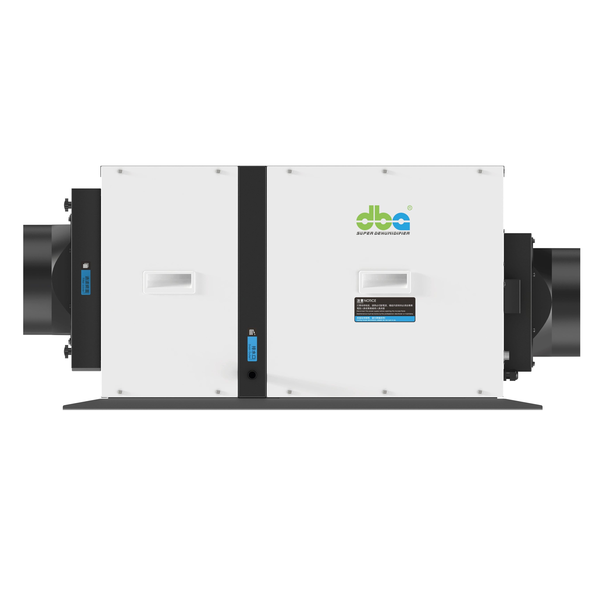

冷凝水排放方案 — 內置水泵與重力排放。 Drainage — integrated pump and gravity fall.
DBA 天花式抽濕機之排水方式由機型決定。單相機型一律配備 1.8 米內置水泵,三相機型則以重力排放。本文說明兩種方式之正確走線。 DBA ceiling dehumidifier drainage is fixed by the unit. Single-phase models all use a 1.8 m integrated pump; three-phase models drain by gravity. This is how each method should be routed.

DBA 天花式抽濕機之排水方式並非由項目決定,而是由機型決定。於 M&E 階段確認正確之排水方式後,後續走線即按該方式進行設計。
單相機型:1.8 米內置水泵
所有單相天花式抽濕機均標配 1.8 米揚程之內置冷凝水泵,涵蓋以下機型:
- UTC 超薄天花系列 — UTC20、UTC68、UTC120
- GEC V 新風淨化天花系列 — GEC30V、GEC50V、GEC70V、GEC110V
- GEC 商用天花單相機型 — GEC68LD-HP、GEC145LD-HP
水泵負責將冷凝水提升至機身上方最高 1.8 米處,其後管路改由重力承接,延伸至排放終點。隨機附帶之排水軟管內已內置單向止逆閥,防倒流功能由機身原廠處理,工程現場毋須額外加裝。
正確走線:先上升,再下降
正確之走線方式為:排水管由機身輸出口起向上垂直延伸至高點(可達 1.8 米揚程上限),於該高點轉向後,再以重力下降至排放終點。此高點形成一個倒 U 形。
採用倒 U 走線之原因屬實務考慮(並非為防倒流之用,此項已由內置止逆閥處理):水泵之揚程能力為 1.8 米,應充分運用此提升能力,並由重力承擔餘下之長距離輸送。高點以下之下降段長度幾乎不受限制,毋須水泵額外負荷。
香港工程現場最常出現之失誤,為排水管直接由機身向下走後再作水平橫向延伸 — 此舉令水泵需克服橫向阻力,效率明顯下降。正確做法應為:先向上提升,後由重力下降。

三相機型:重力排放
較大型之三相商用天花式機型 — GEC280LD、GEC400LD、GEC550LD — 並無內置水泵,改以純重力方式排水。排水管必須自機身輸出口起持續向下傾斜至排放終點,中間不可有任何向上提升之段落。
三相機型之安裝位置須於 M&E 階段配合確認,確保由機身至排放終點之走線在物理上能維持連續下降。
排放終點
無論採用何種方式,排水管最終均接駁至大樓既有之冷凝水路徑 — 包括冷凝水主管、地台排水口,或鄰近之冷氣機冷凝水管。處理方式與一般風機盤管(FCU)之冷凝水排放相同,並須符合水務署及屋宇署之相關規定。
調試程序
安裝完成後須執行以下檢查:
- 啟動除濕模式運行 30 分鐘,並前往排放終點實地確認有正常水流
- 對於配備水泵之機型,留意水泵運轉情況 — 每隔數分鐘短暫啟動為正常;若持續運轉,表示走線存在問題
- 24 小時後檢查假天花內部,確認無任何潮濕痕跡
如項目之排水走線存在限制,可向本公司提供平面圖,本工程團隊將協助繪製可行之排水路徑方案。
DBA ceiling dehumidifier drainage is decided by the unit, not the project. Confirm the right method at M&E stage and the routing follows from there.
Single-phase units: 1.8 m integrated pump
Every single-phase ceiling model ships with an integrated condensate pump rated for 1.8 m of head:
- UTC ultra-thin ceiling — UTC20, UTC68, UTC120
- GEC V fresh-air ceiling — GEC30V, GEC50V, GEC70V, GEC110V
- GEC commercial single-phase — GEC68LD-HP, GEC145LD-HP
The pump lifts condensate up to 1.8 m above the unit, after which gravity carries it the rest of the way to the discharge. The supplied drain hose has a built-in check valve, so back-flow protection is handled by the unit itself — no separate check valve needs to be specified on site.
Correct routing: rise to a high point, then fall
The drain line leaves the unit and rises vertically to a high point at or near the 1.8 m pump head. From that high point, the line falls by gravity to the discharge. This creates an inverted-U at the top of the run.
The reason for the inverted-U is practical, not back-flow protection (the check valve handles that): use the full 1.8 m lift the pump is capable of, then let gravity take the line the rest of the way. The downward leg can be any practical length without further pump load.
The most common HK installation error is to drop the line straight down from the unit and try to traverse it horizontally. Lift up first, then let gravity carry it.
Three-phase units: gravity fall
The larger three-phase commercial ceiling models — GEC280LD, GEC400LD, GEC550LD — have no integrated pump. Drainage is gravity-only. The line must slope continuously downward from the unit to the discharge with no rising section.
Three-phase units must be sited where a continuous fall to the discharge is physically possible. Confirm this during M&E coordination, before installation.
Discharge point
Both methods discharge into an existing condensate route the building already supports — a condensate main, floor trap, or adjacent FCU drain. Treat the dehumidifier's drain the same way the project treats fan-coil condensate, with local PUB and Buildings Department requirements observed.
Commissioning
- Run the unit in dehumidify mode for 30 minutes and confirm water reaches the discharge
- For pumped units, observe pump cycling — short bursts every few minutes are normal; continuous running indicates a route problem
- Inspect the ceiling void after 24 hours of use — it should be dry
If a project's drainage route is constrained, send us the floor plan and the engineering team will sketch a working layout.
項目諮詢Project enquiry
排水路徑規劃遇到困難?Tricky drainage situation?
請提供單位平面圖,本公司將草擬可行之排水路徑方案。Send the floor plan; we will sketch a working drain route.
免費諮詢Request a quote